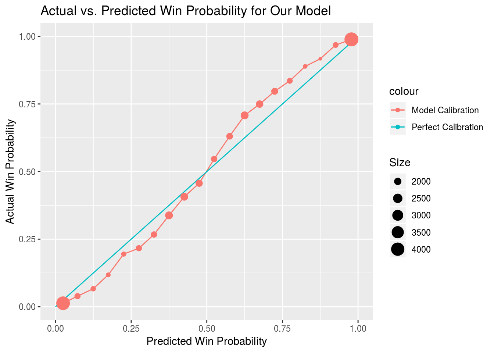
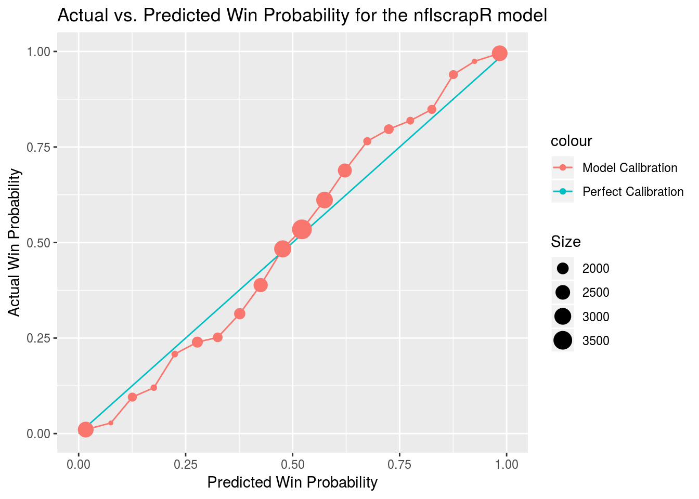
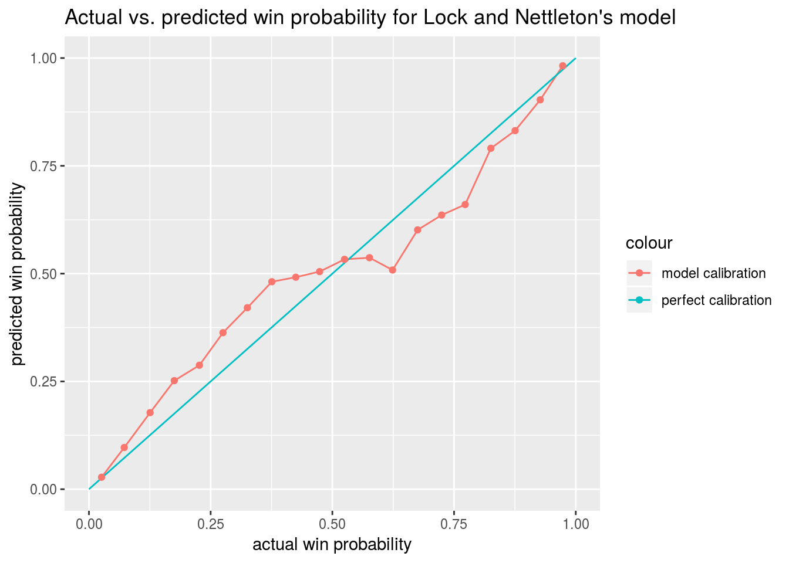
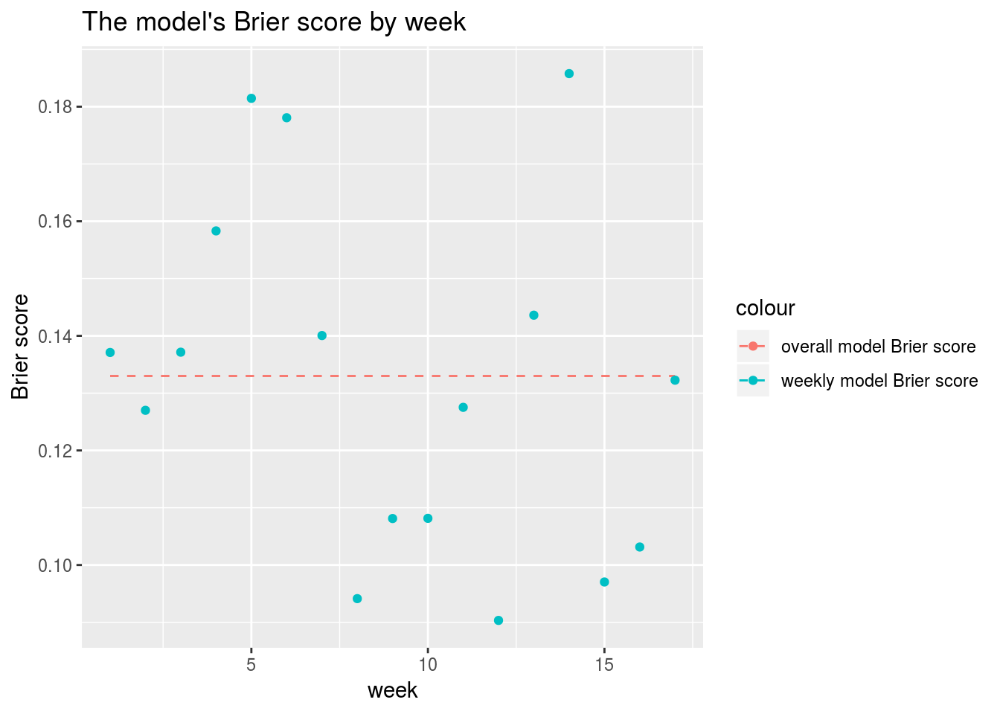
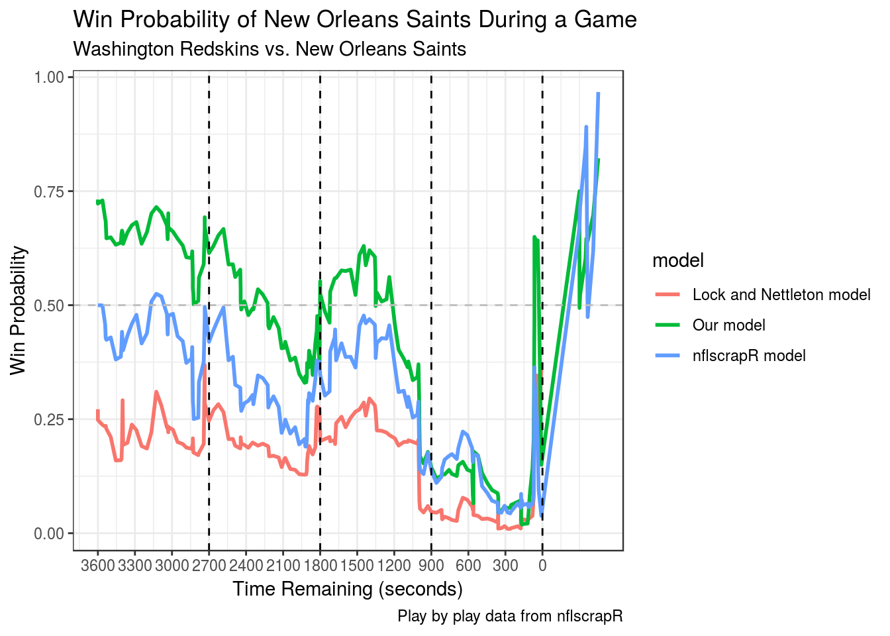

Chapter 3 Results
Model performance is tested by re-training each sub-model on the entire training set29 and evaluating the performance of the models when the protocol described in Chapter 2 is used. Results are then are then compared against the other two models for which we have access to 2017 predictions—the models developed by Lock and Nettleton (2014) and Horowitz, Ventura, and Yurko (2018). The two loss functions we use to measure model performance are Brier score, the mean of the squared distance between each prediction and the corresponding outcome, and log loss, the mean of the \(log(1 - distance)\) for each prediction and the corresponding outcome.
| Our Model | nflscrapR Model | Lock and Nettleton Model | |
|---|---|---|---|
| Brier score | 0.133 | 0.155 | 0.195 |
| Our Model | nflscrapR Model | Lock and Nettleton Model | |
|---|---|---|---|
| Log loss | -0.41 | -0.465 | -0.563 |
We can also see that, as expected, the model generally performs better as the game progresses with the exception of overtime30. Interestingly, each model tested has a Brier score above 0.25 for the overtime period, indicating that, at least for the 2017 season, each model would be better off classifying every overtime game as a coin flip.
| 1st Quarter | 2nd Quarter | 3rd Quarter | 4th Quarter | Overtime | |
|---|---|---|---|---|---|
| Our model | 0.183 | 0.156 | 0.112 | 0.081 | 0.255 |
| nflscrapR model | 0.220 | 0.180 | 0.133 | 0.089 | 0.305 |
| Lock and Nettleton Model | 0.303 | 0.229 | 0.163 | 0.097 | 0.480 |
A plot has been included that omits overtime to show how average model performance improves over the course of games.

The model also performs relatively evenly across each down (and kickoff and point after attempts), suggesting the predictions are mostly consistent.
| 1st Down | 2nd Down | 3rd Down | 4th Down | Kickoff | Point After Attempt | |
|---|---|---|---|---|---|---|
| Our model | 0.133 | 0.134 | 0.133 | 0.129 | 0.130 | 0.130 |
| nflscrapR model | 0.156 | 0.156 | 0.156 | 0.151 | 0.153 | 0.153 |
| Lock and Nettleton Model | 0.196 | 0.196 | 0.196 | 0.191 | 0.194 | 0.195 |
To test calibration, game outcomes are grouped into bins that correspond to model predictions between a set of values. Twenty bins are created with each bin representing all points where the model predictions fell within a given five percent window. The mean game outcome is then plotted against the mean model prediction for each bin where the plot for a perfectly calibrated model would show a straight line with a slope of one.

Our model actually appears to have been slightly underconfident during the 2017 season, though that may just be a quirk of the sample as only 256 unique games are featured and predictive perofrmance on different plays within the same game is inherently autocorrelated.
We were also curious whether model predictions become more accurate as the season progresses. It seems like the indicators of team strength included in the model—DVOA ratings and point spread—would become more precise as information about a team trickles in over the course of the season.

The plot seems mostly random, but Brier score values did skew a bit lower as the season progressed. A linear regression of Brier score with week as a predictor found week to have a slope of -0.0018. This may be something to look at in the future.
We also included a comparison of predictions outputted by each of the models over the course of a 2017 game between the New Orleans Saints and Washington Redskins.
 In the game above, the Saints fell into an early hole before clawing back to force overtime on a touchdown with one minute left. They would win in overtime. This game seems instructive in terms of the strengths of our model. We are more bullish on Saints winning than the other models from the get-go, likely because they our model views them as a much better team than the Redskins, because they were favored by nine points heading into the game. Additionally, our model might be a bit more hesitant to shade too far towards teams that get out to early leads against a team with an offense as good as the one the Saints boasted in 201731, because of the increase in variance our model believes a potent offensive team to bring about.
It must be noted that our model has a bit of a leg up on the Lock and Nettleton (2014) model because it was trained on more recent data, and that the model created by Horowitz, Ventura and Yurko (2018) is (purposefully) not fully optimized for predicting win probability because it omits indicators of team strength. Still, the performance of our model is very encouraging. In the future we hope to compare its performance against proprietary models developed by other outlets.
The training set is comprised of all the 2010-2016 data. During the tuning process each model was trained only on 2010-2015 data.↩
There is a ceiling to how well even an all-knowing model could perform when predicting overtime because the games are so close to coin flips.↩
Their offensive DVOA was 22.1% heading into the game, ranking them second in the league↩